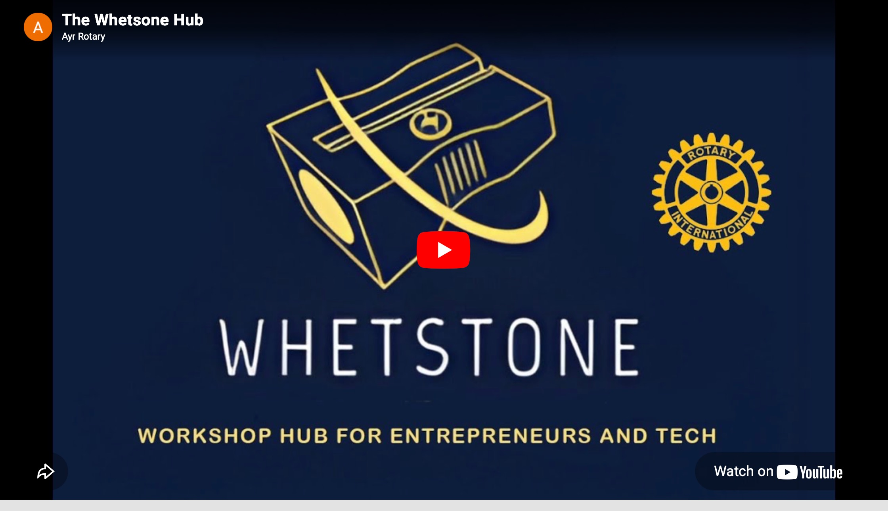

Whetstone Tech Workshop

The Whetstone Tech Workshop Hub is a concept devised by Ayr Rotary, to provide a window of opportunity for young potential entrepreneurs to start a business based upon the computer-led Tech Industry.
As described in this video, prepared with help and expertise from the University West of Scotland, the workshop shall have a shared workplace, with office accommodation and computer facilities based at Prestwick Airport, with easy access to public transport.
This Tech Workshop Entrepreneurial Initiative has government support, as you will note from the video, with one of the interviewees MSP Richard Lochhead, the government's minister for business. Richard's contribution in the video, along with his advice and support through the Scottish Government Entrepreneurship Division, as with others, is much appreciated.
This initiative has support also from another interviewee Mike Stewart, a Director of Storm Aviation, with its international line maintenance for the aircraft industry based at Prestwick Airport.
We wish to encourage interested candidates to apply in accordance with the following application procedure (also referred to at the end of the video) expressing an interest in this unique window of opportunity.
- Full name
- Email address
- Phone Number
- A brief summary of your current position/bio confirming computer literacy and skill level
- In not more than 100 words, outline your goals and aspirations, and reasons why you wish to be considered for selection
Please apply by emailing above information to: whetstoneyr@gmail.com
Selected applicants shall be invited for interview, with a view to discuss and mutually agree the Terms and Conditions for participation.